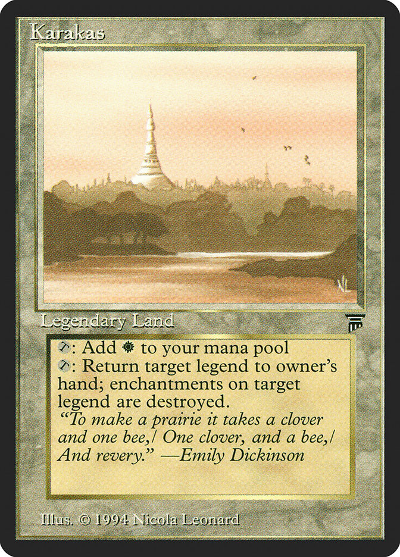
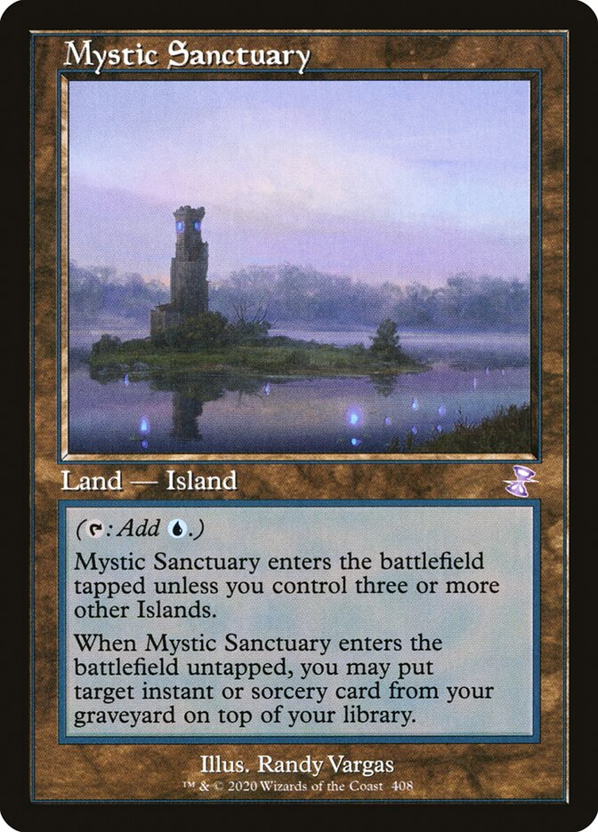
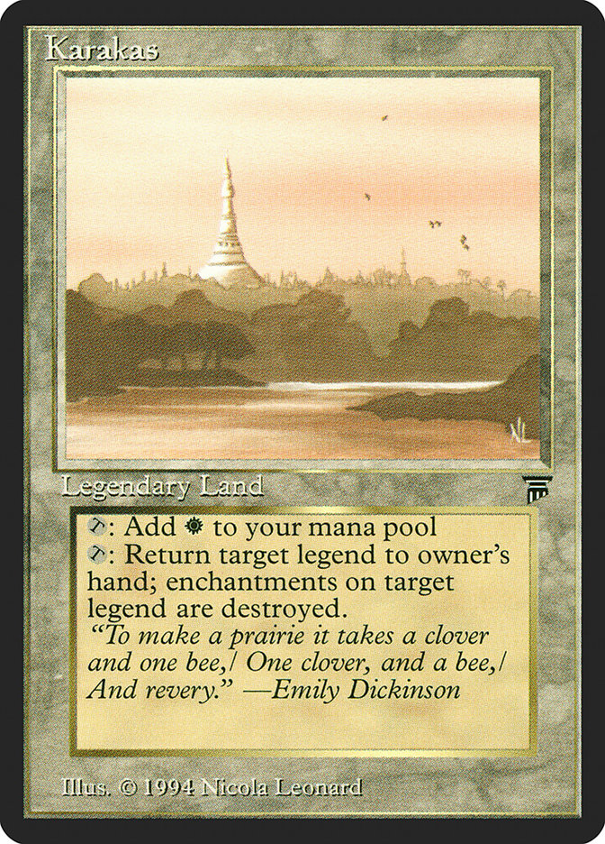
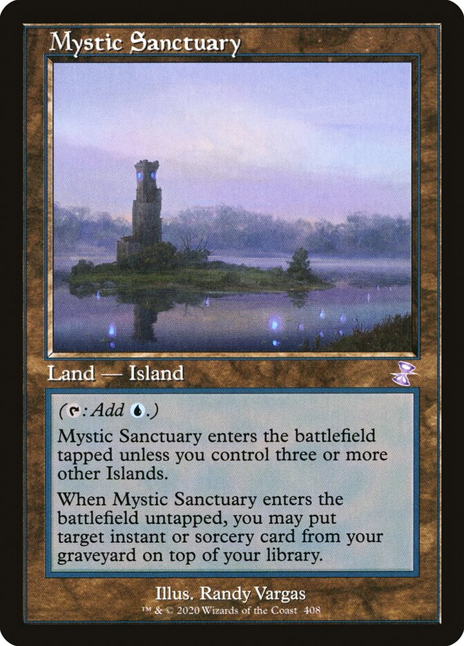
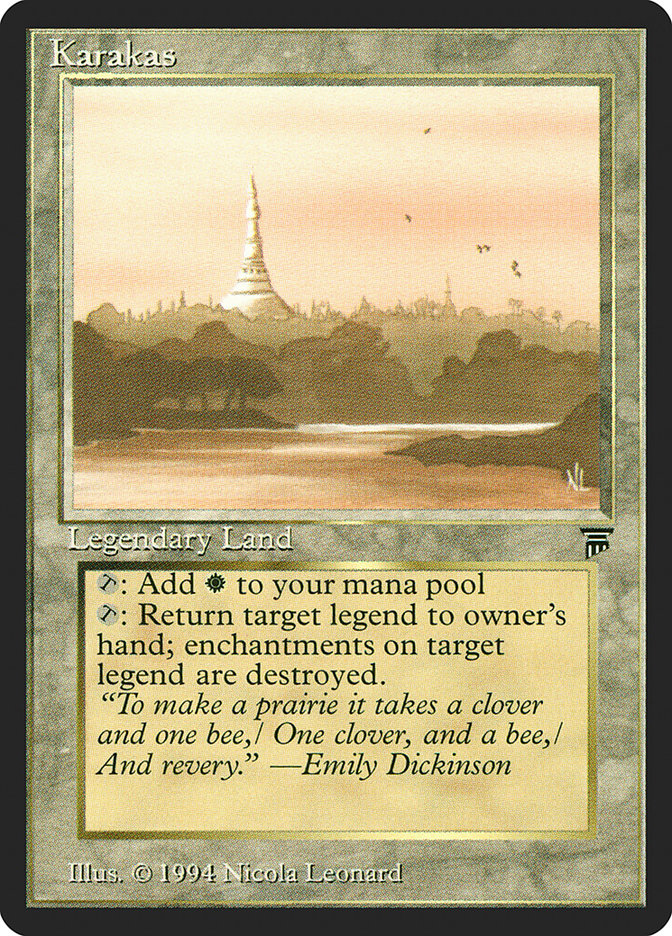
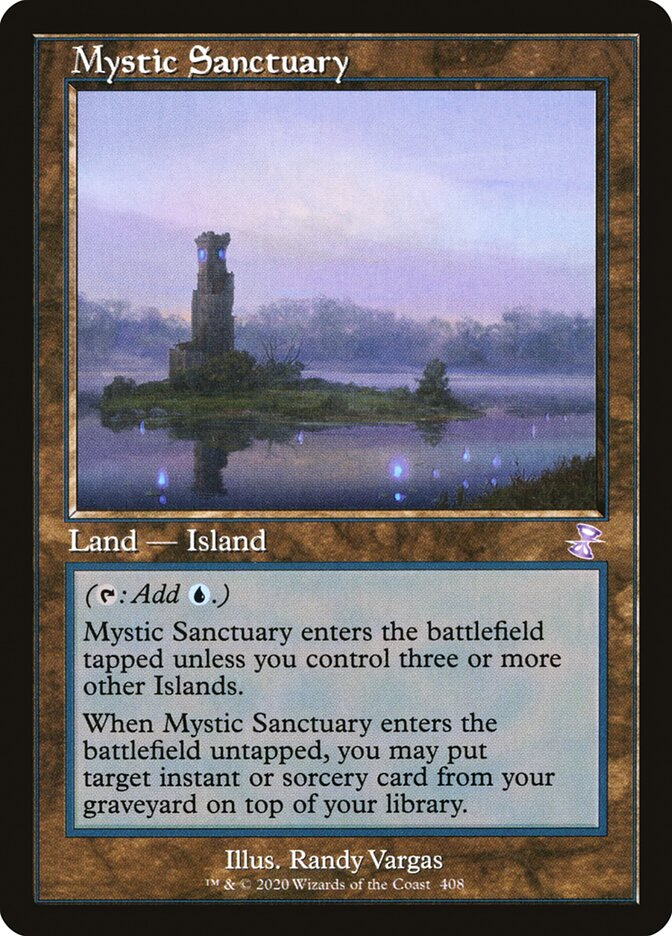

*For this list, I excluded basic lands and dual lands so that we can get a look at what the utility lands of the format are.*
Wasteland continues to be a great answer for other nonbasic lands or an efficient means of mana denial. Karakas is a cost free answer to problematic legends like Marit Lage. Mystic Sanctuary is a fetchable way to recur previously used spells. Ancient Tomb helps power out fast starts at the cost of life points. The newest addition to the list, Urza's Saga, allows you to play a tutorable toolbox of 0 and 1 mana value artifacts, while also applying pressure with Constructs if needed.

